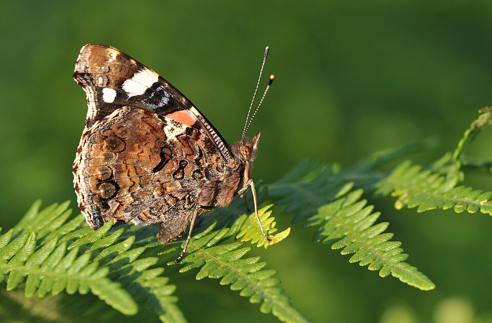
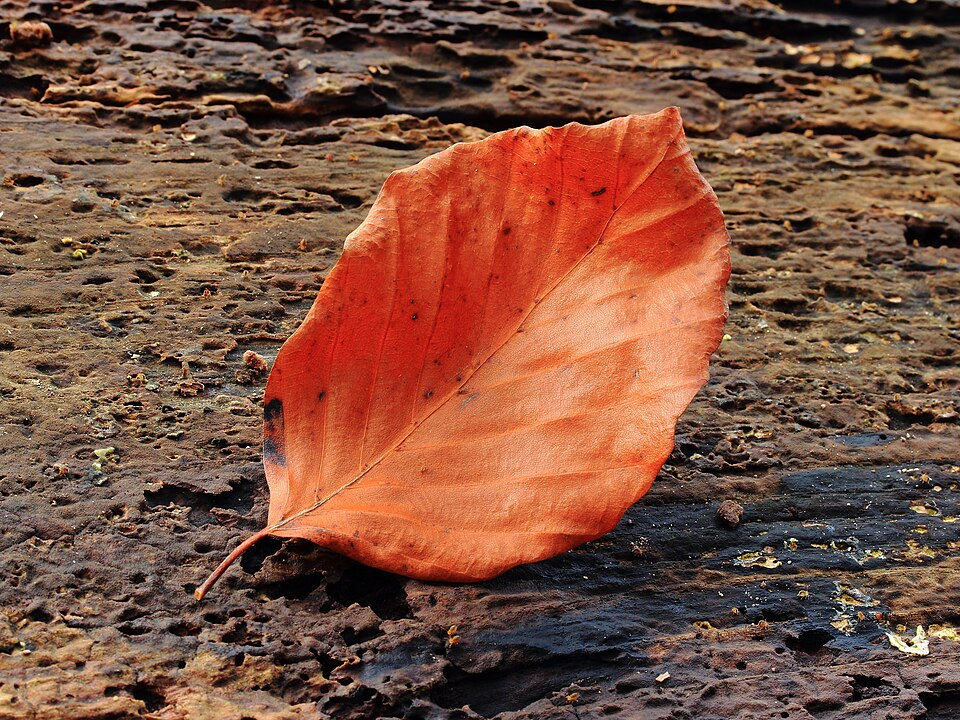
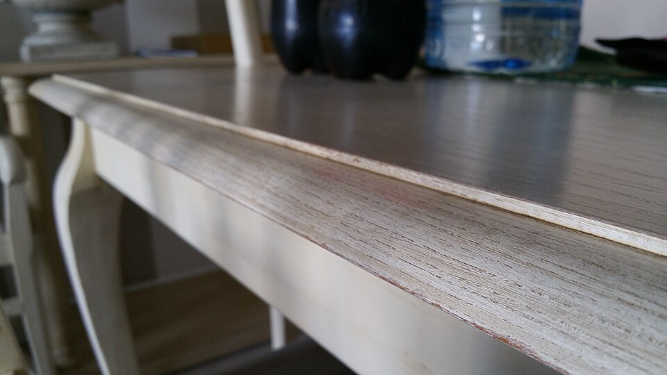
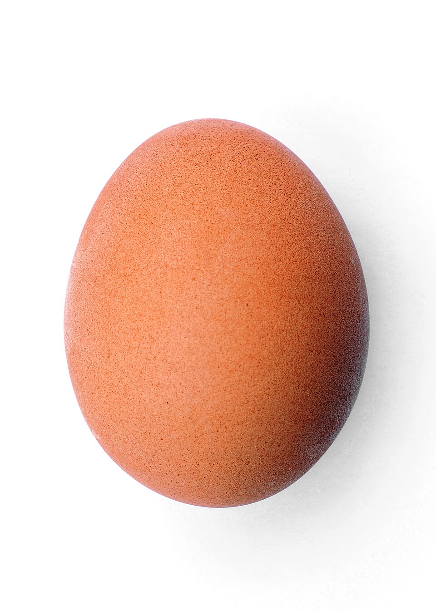
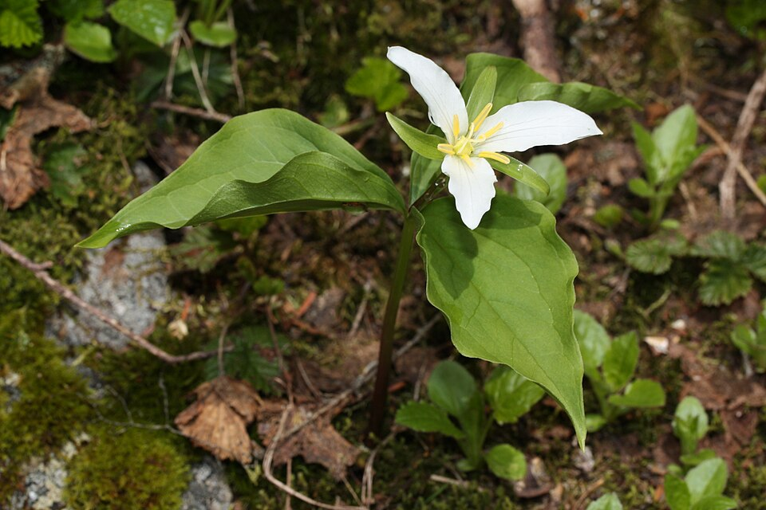
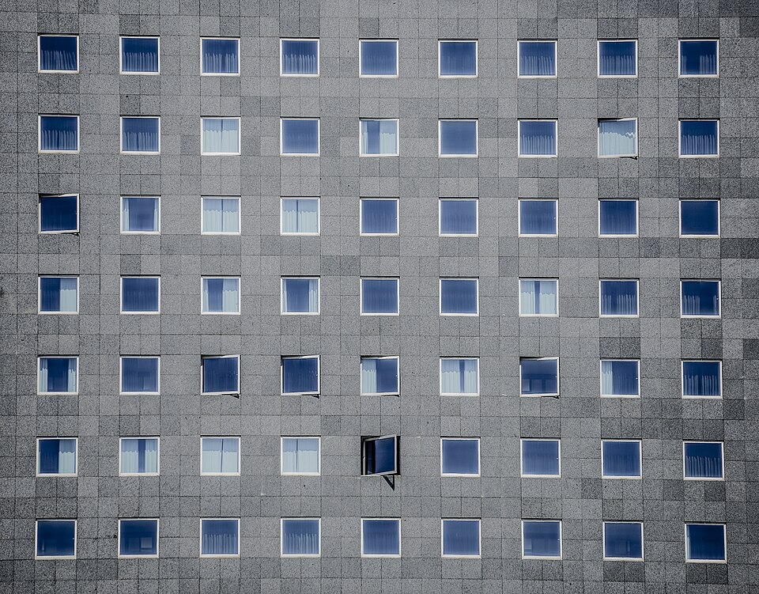
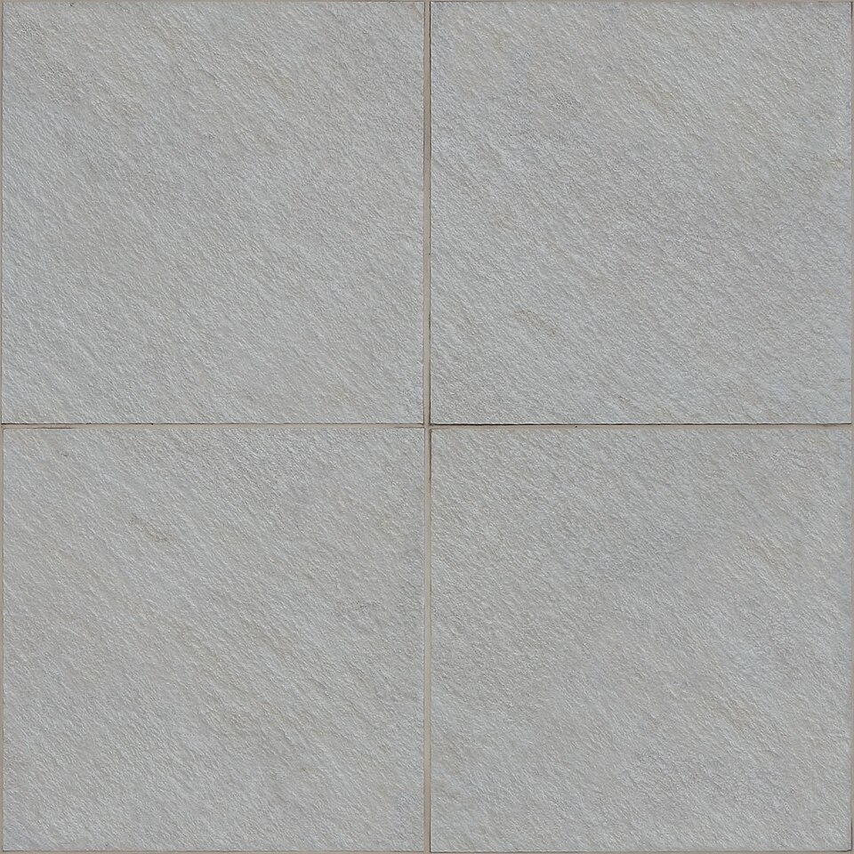

Red admiral butterfly
Object: Red admiral butterfly Lines of symmetry: 1

Red admiral butterfly
Object: Red admiral butterfly Lines of symmetry: 1

European beech leaf
Object: European beech leaf Lines of symmetry: 1 (down the midrib)

Rectangular table top
Object: Rectangular table top Lines of symmetry: 2 (vertical & horizontal through the center)

Chicken egg (oval)
Object: Chicken egg (oval) Lines of symmetry: 2 (along the long axis & short axis)
Yield sign (triangle)
Object: Yield sign (equilateral triangle) Lines of symmetry: 3

Pacific trillium flower
Object: Pacific trillium flower Lines of symmetry: 3 (treating the flower as evenly balanced)

Square windows on a facade (pick one window)
Object: One square window Lines of symmetry: 4 (2 through midpoints of sides + 2 diagonals)

Square floor tile (one tile)
Object: One square tile Lines of symmetry: 4 (same as a square)
Reminder: a line of symmetry is a fold line where both sides match like a mirror.
{kind=link}
_02.JPG){kind=link}
{kind=link}
{kind=link}
{kind=link}
{kind=link}
.jpg){kind=link}
{kind=link}